Ford
Ruta de la croqueta a bordo de un Ford por cinco joyas de la ciudad.
Descubrimos los mejores restaurantes, recetas y rincones gastronómicos allá donde vamos. Esta es nuestra aventura, ¿te vienes?
Explorar saboresSomos Adri y Carla, pareja albaceteña de toda la vida. En mayo de 2024 grabamos nuestro primer vídeo en un italiano recién abierto de la ciudad. No teníamos plan, ni equipo, ni guion. Solo hambre, una cámara y la convicción de que Albacete escondía mucho más sabor del que se cuenta.
Lo que empezó como un capricho de dos foodies se convirtió en una pasión. Casi dos años después, Sabores de Aventuras es una de las cuentas gastronómicas más seguidas de la provincia. Probamos croquetas, perseguimos kebabs y descubrimos panaderías de toda la vida, almuerzos baratos y locales con estrella Michelin. Puntuamos sobre 10, decimos lo que pensamos y volvemos a casa con la barriga llena.
Pero la cosa no acaba en la ciudad. También documentamos nuestras escapadas y viajes, porque la buena gastronomía no tiene fronteras. Nos encanta Albacete y por eso intentamos darlo a conocer de la mejor manera posible, aunque la aventura nos lleve cada vez más lejos.
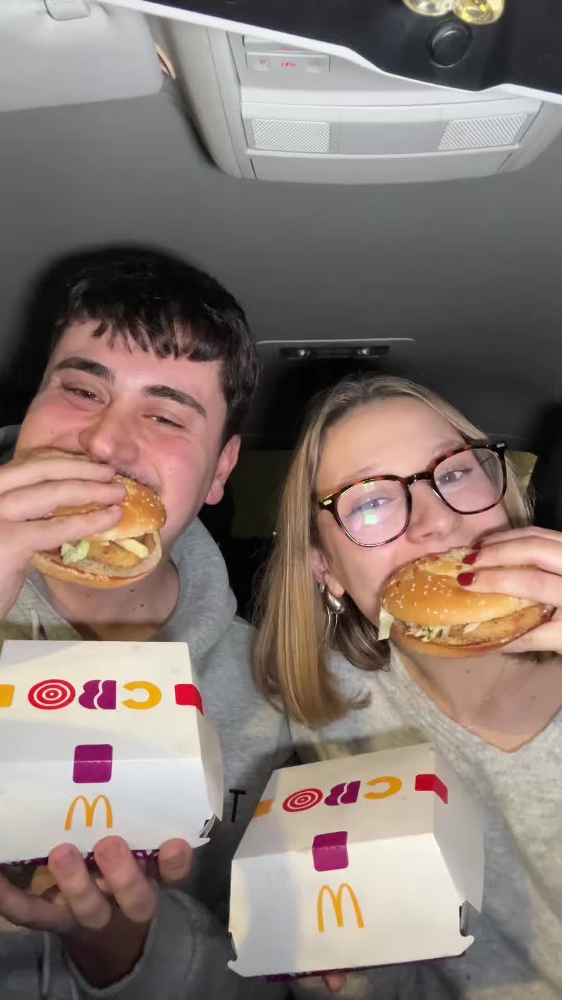
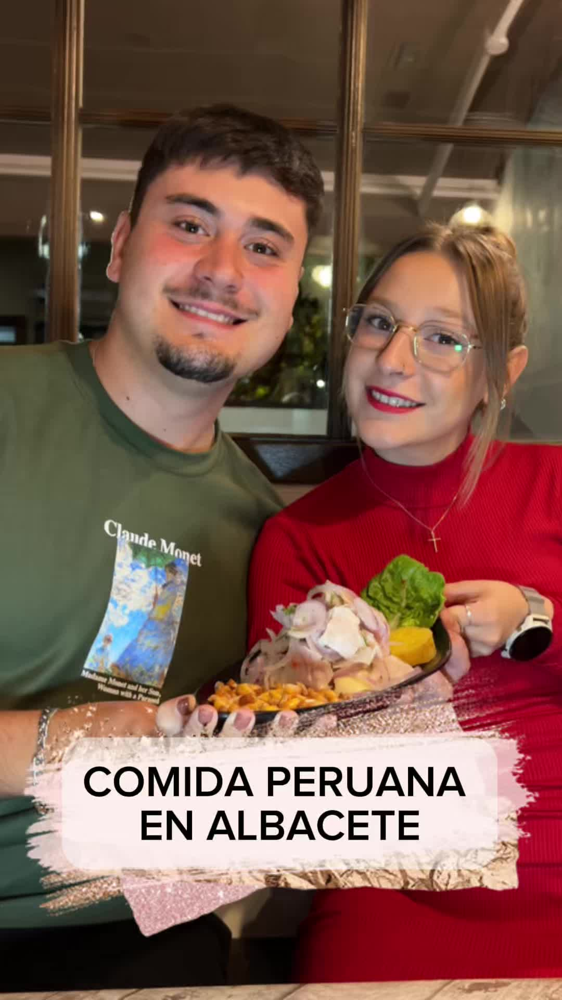
No vamos a Madrid a buscar lo que ya tenemos en la calle Tejares, en el Mercado de Carretas o en una taberna del centro. Nuestra ruta empieza y termina aquí: en la ciudad y en la provincia que conocemos de memoria, desde las croquetas con estrella de La Bechamel hasta el kebab de barrio que cierra a las cuatro de la madrugada.
Ruta de la croqueta a bordo de un Ford por cinco joyas de la ciudad.
Contenido de marca probando sus novedades en los locales de Albacete.
Visita al dos estrellas Michelin de Javier Sanz y Juan Sahuquillo en Casas-Ibáñez.
Los míticos miguelitos de La Roda, directos desde su obrador.
Cobertura del campeonato nacional de hamburguesas a su paso por la provincia.
Seguimiento de la competición burger más disputada, hamburguesa a hamburguesa.
Los que más nos han visto en TikTok e Instagram.
Un poco de todo. Cada categoría, una ruta.
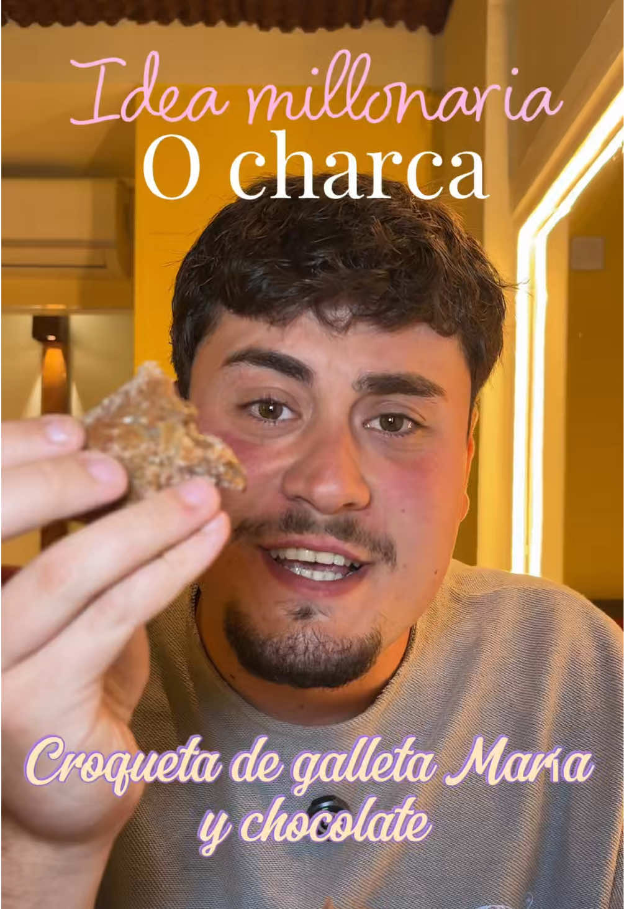
Ruta de la croqueta en Ford Capri. Cinco paradas, cinco joyas: Dallas, Sueños del Este, La Bechamel, Gran Hotel, La Bonita.
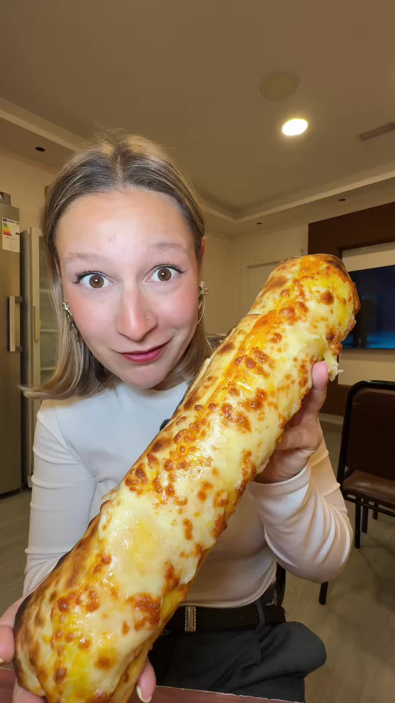
Batalla por el mejor kebab de la ciudad: Taha Turk, Kebab Albacete, La Zona Kebab.
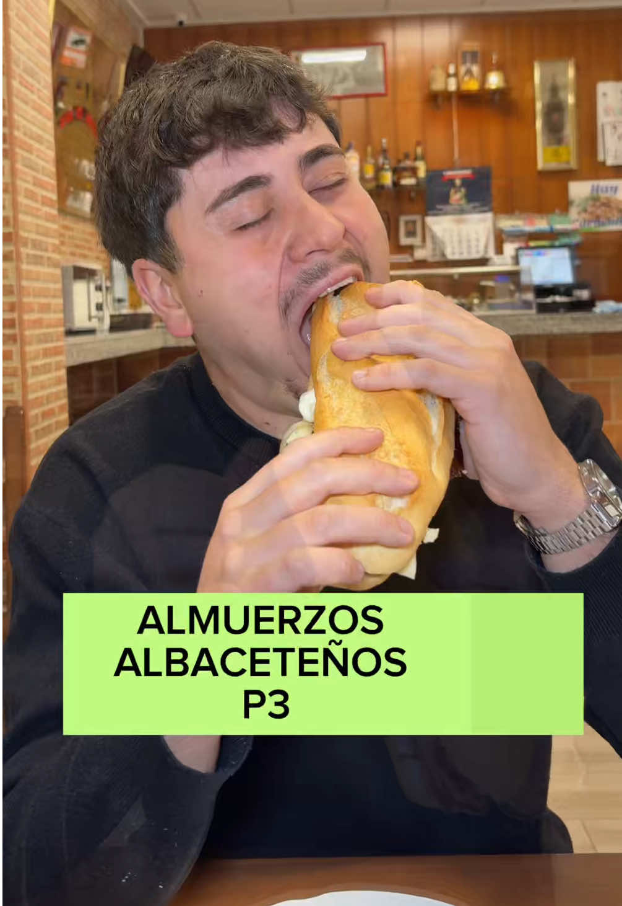
Capítulos de almuerzos que no superan los 6€. Alboroque, Gaia y más.
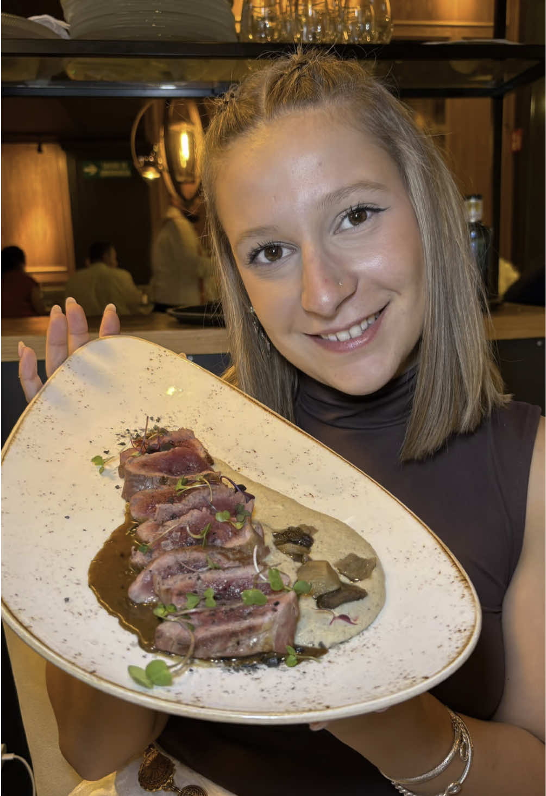
La Bechamel y Keiji, lo más premium. Croqueta de jamón campeona en Madrid Fusión 2023.
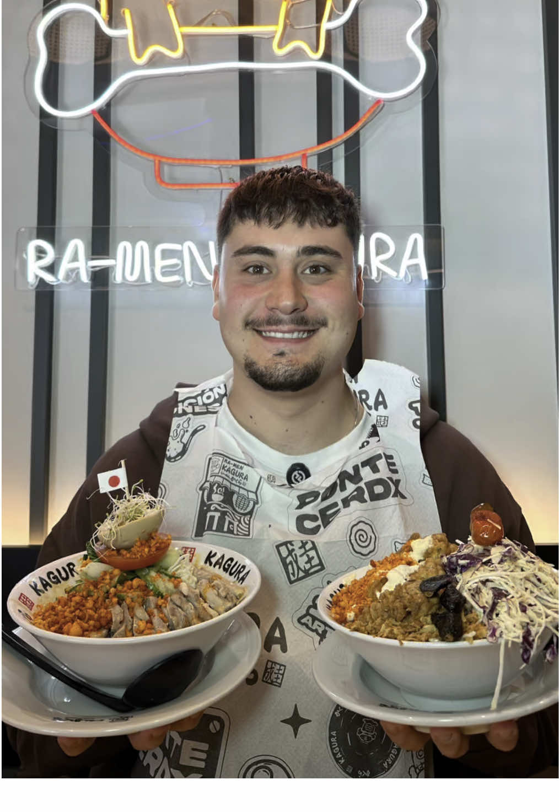
Ramen, sushi y nikkei sin salir de casa: Tsuruta Ramen, Hoy Sushi, Keiji by Joel.
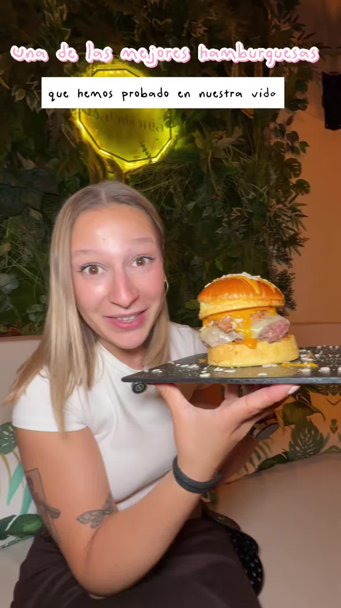
Brocata abrió en junio 2025 y arrasamos. También Babilonia food truck.
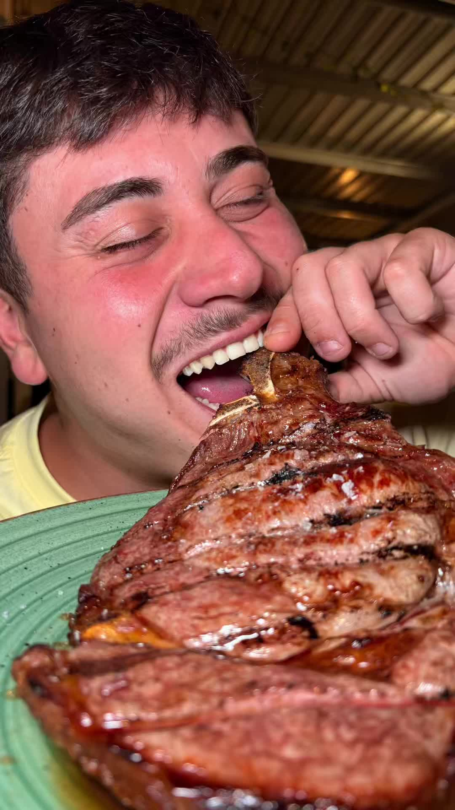
Lo de siempre, pero rico: Taberna Motivos, Tapería Dallas, Envero, Catacaldos.
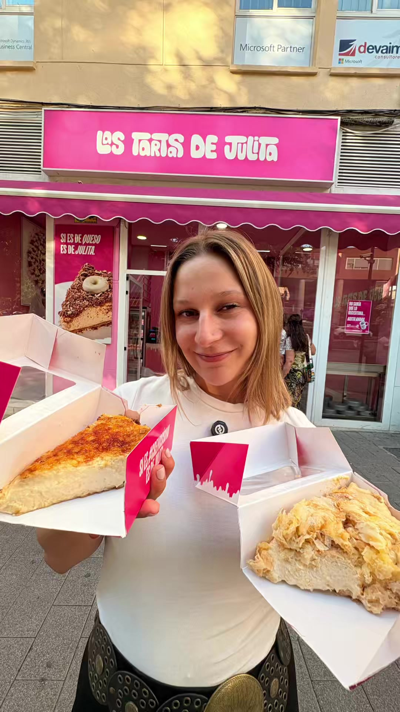
Torrijas de Semana Santa, New York Rolls de pistacho y obrador: Barú, Suiza, Don Cardenal, La Noguera.
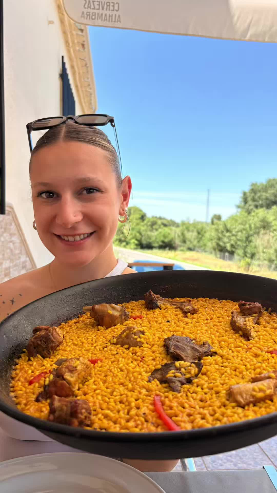
Del arroz meloso a la paella de domingo. Cocina tradicional de cuchara y sartén que nunca falta en nuestras rutas.
Busca un local o toca cualquier pin para ver foto, puntuación y opinión completa.
Restaurantes y marcas que han colaborado con Sabores de Aventuras.
Muy honestos, muy cercanos y claros, con ganas de crecer. Recibimos un trato muy agradable y seguro que repetiremos.
El paso de Carla y Adrián fue increíble. La repercusión fue total.
Nos gusta su manera de transmitir las ideas en los vídeos. Son gente local y crean vídeos muy dinámicos.
Estoy muy contenta con el vídeo de Carla y Adrián. Fue muy original y tuvo una gran repercusión.
Si quieres que visitemos tu local, colaborar con nosotros o simplemente saludar — escríbenos. Leemos todo.
¡Gracias!
Te responderemos pronto. Mientras tanto, síguenos en Instagram para no perderte ninguna reseña.